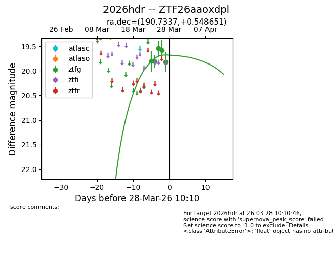
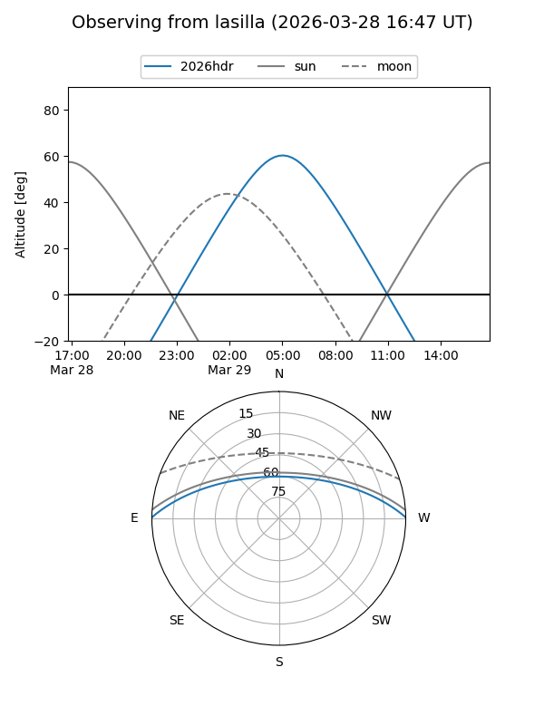
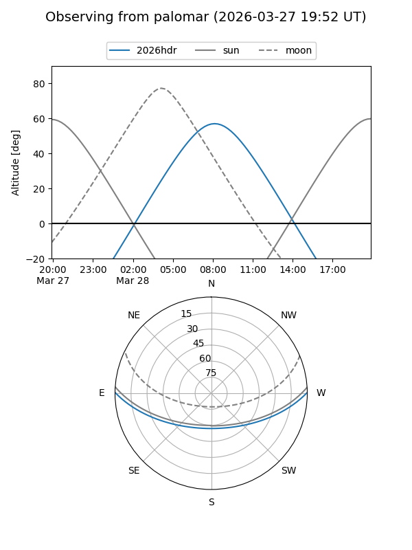
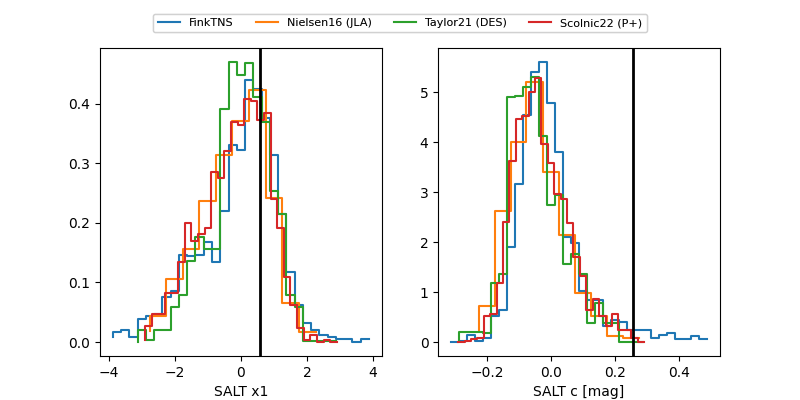

2026hdr
Target 2026hdr at 2026-03-28 10:13
Aliases and brokers:
FINK: link
Lasair: link
ALeRCE: link
TNS: link
YSE: link
alt names
ZTF26aaoxdpl (ztf,fink_ztf)
2026hdr (tns,yse)
Coordinates:
equatorial (ra, dec) = 190.7337,+0.54865
equatorial (HMS+DMS) = 12:42:56.08,+00:32:55.14
galactic (l, b) = (298.1897,+63.34208)
Flags:
Photometry:
last ztfg=19.82
5 ztfg detections
Lightcurve

Visibility


Additional plots
